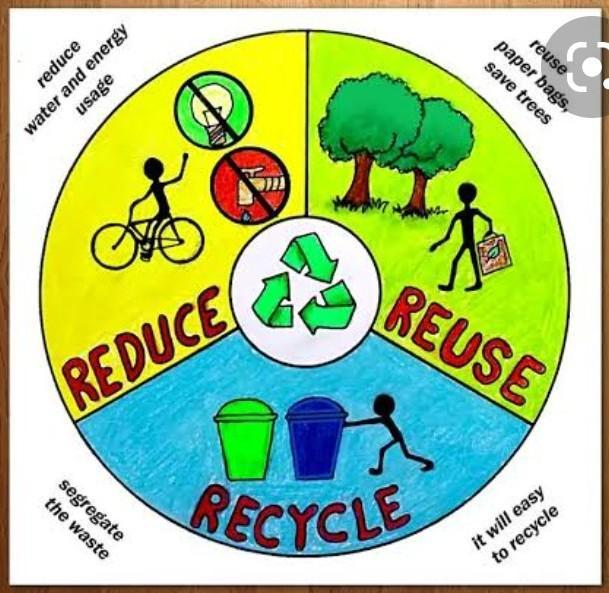
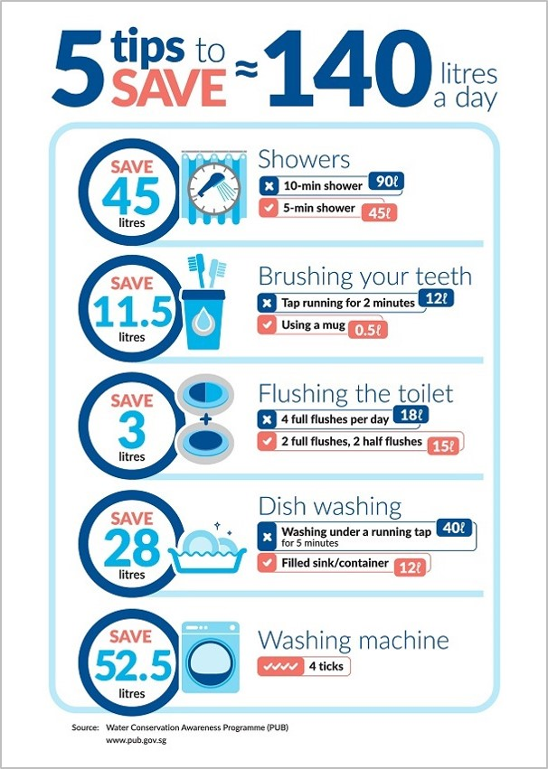
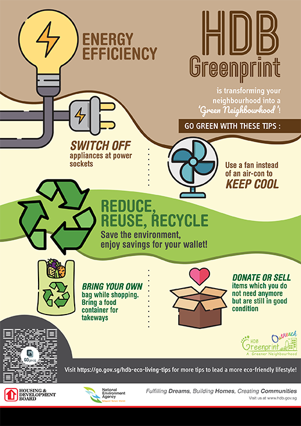

What can we do to play our part in saving the earth?

- Reduce, Reuse and Recycle
- ·Firstly, we can Reduce, Reuse and Recycle.
- ·The first step is Reduce, which is to reduce the amount of waste generated in the first place. For example, we can reduce food waste by buying/cooking only what we can finish. We can also reduce electricity by turning off the lights and fans when not in use.
- ·The second step is Reuse. Instead of throwing away an old item, stop and think about how you can reuse the item. For example, instead of throwing away old clothes, they can be sewn into bags/used as rags.
- ·The third step is Recycle. We can recycle plastic/glass/electronic items to convert them into new items. This helps us conserve resources and reduce waste sent to landfills.

- Conserving water
- ·It is important to conserve water as water is a finite resource.
- ·Firstly, we can take shorter showers of 5minutes compared to long showers of 10minutes. This helps us save half the amount of water used.
- ·Secondly, when brushing our teeths, we can use a mug instead of letting the water run. This will help reduce the total amount of water used.
- ·Thirdly, instead of washing the dishes under running water, we can fill a container with water and wash the dishes inside there. After washing the dishes, we can use that water to water the plants as well.
- ·Lastly, we can use the washing machine only when it is filled with clothes. This will reduce the amount of times we use the washing machine, helping us to conserve water.

- Conserving energy
- ·Conserving energy helps reduce pollution and conserves natural resources.
- ·Whenever we are not using an electrical appliance, make sure to turn off the power in order to not waste energy.
- ·We can use a fan instead of a air-con to help keep us cool while conserving energy.
- ·If need to use the air-con, try to keep it at 25 degrees celsius to cut down on the amount of energy used.
- ·We can buy more energy efficient appliances which are those with more ticks on them as they help reduce energy consumption.